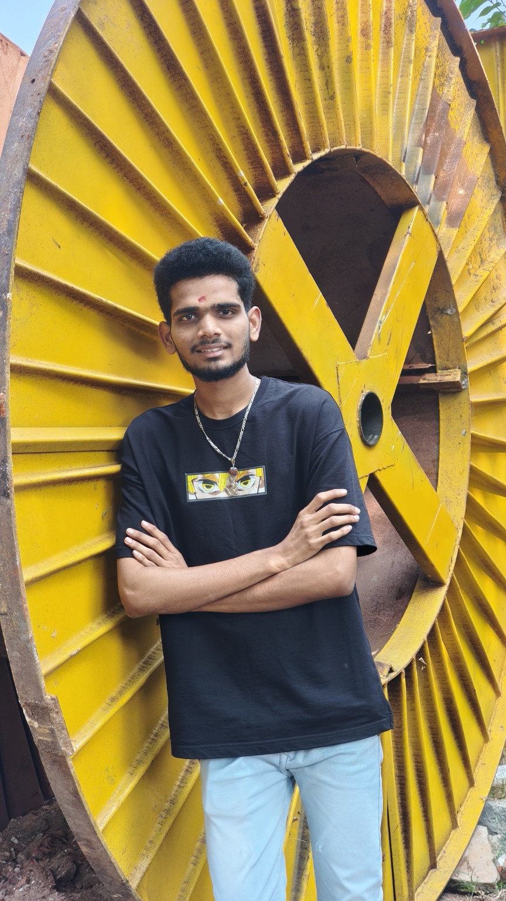

CAD & Design
3D modelling, part design, technical drawings
MECHANICAL ENGINEERING STUDENT
I'm Lokesh Surakasi, a third-year B.Tech Mechanical Engineering student at Anil Neerukonda Institute of Technology and Sciences, interested in CAD design, manufacturing, and practical engineering solutions.

01 — ABOUT ME
I enjoy understanding how things work, learning engineering tools, and turning ideas into useful solutions.
I'm currently in my third year of B.Tech Mechanical Engineering at Anil Neerukonda Institute of Technology and Sciences. I'm building my design skills with CATIA, Autodesk Fusion 360, AutoCAD, and Engineering Drawing while learning through coursework and practical projects. I value teamwork, clear thinking, and thoughtful design.
Personalize this section with your college, year of study, interests, and career goals.
02 — SKILLS
3D modelling, part design, technical drawings
Mechanical fundamentals and engineering analysis
Basic programming, documentation, and presentations
Collaboration, communication, and problem-solving
Only keep the tools and skills you can confidently discuss in an interview.
03 — SELECTED PROJECTS
An engineering project concept for a solar-assisted agricultural rover designed to support seed planting and weed removal using sensors, navigation, and plant detection. Add your specific role, design details, and current project status here.
Discuss project ↗A design-thinking concept for a space-saving table with a foldable surface and a supported rotating mechanism for compact homes. Add sketches, mechanism details, and prototype status as your work progresses.
Discuss project ↗Project concepts are presented as starting points. Update each description with your actual contribution, tools used, project status, outcomes, and images before sharing this portfolio.
04 — CERTIFICATES
Include the course or certificate name, issuing organization, completion date, and a link or image of the certificate.
CERTIFICATE NAME · ISSUER · YEARShow relevant CAD training, online courses, workshops, competitions, and technical events you have completed.
COURSE / WORKSHOP · ORGANIZATION · YEAR05 — CONTACT
I'm happy to connect with fellow students, engineers, mentors, and recruiters.